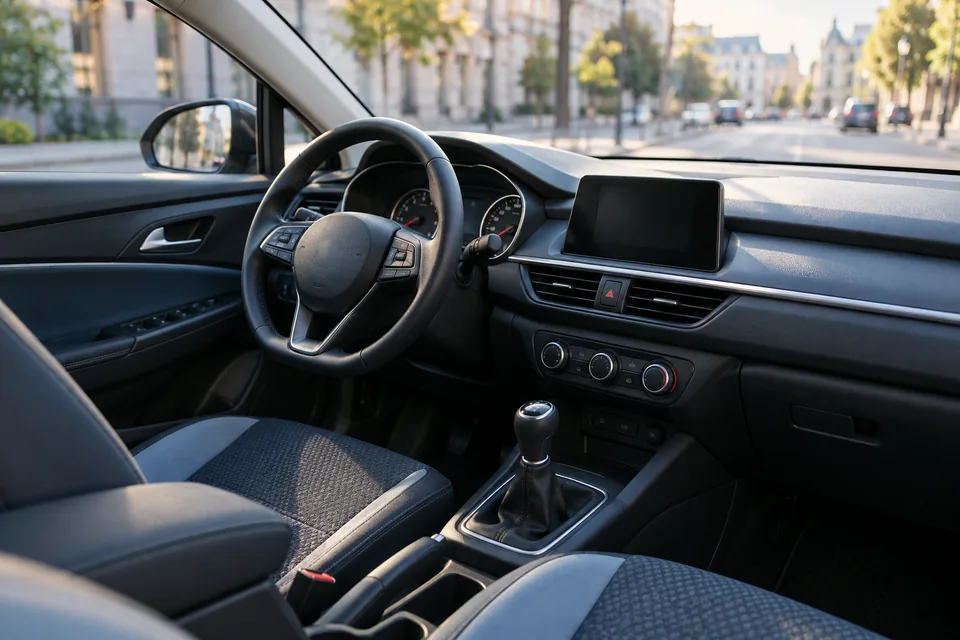

Независимость вывода
Место нельзя купить
Платные позиции и рекламные места в рейтинге не предусмотрены. Порядок участников должен следовать методике.
РейтингРу помогает разобраться в условиях, увидеть различия и понять, что стоит за оценкой.

За одинаковыми словами в предложениях компаний могут стоять разные условия.
Что входит в стоимость? За что придётся доплатить? Что замечают клиенты? Какие сведения можно проверить? Разбор связывает эти вопросы в понятную картину.
Наша задача — дать читателю основания для собственного решения. Обстоятельства и приоритеты у людей разные; одного места в списке для выбора недостаточно.
Платные позиции и рекламные места в рейтинге не предусмотрены. Порядок участников должен следовать методике.
Факты, условия и даты проверки помогают понять, откуда взялся вывод и насколько он актуален.
Объясняем различия без рекламных обещаний и сложных формулировок, которые скрывают смысл.
Авторство, источники и обновления — часть доверия к каждому разбору.
Автор и ответственный за проверку материала.
Дата, к которой относятся сведения и выводы.
Понятное объяснение существенных исправлений.
Сейчас вы смотрите рабочий прототип. Участники, оценки и цены в примерах условные.